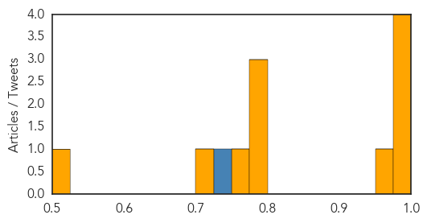
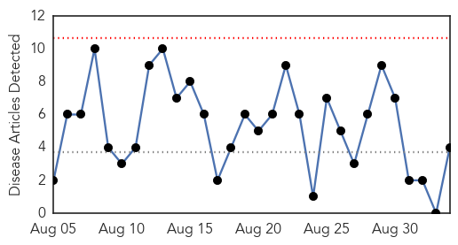
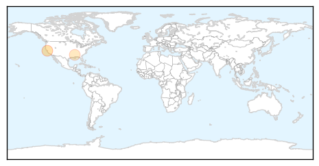
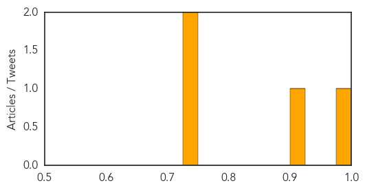

Cholera
30-Day Web Trend
1 alerts, 0 warnings

30-Day Twitter Trend
2 alerts, 0 warnings

Article Locations

Article Confidences
Top Articles:
- 0.997
- Cholera uncontrollable in Ghana -
- 0.995
- Ministry of Health donates infusions to hospitals
- 0.991
- Haiti launches cholera vaccination campaign - Haiti
- 0.987
- Cholera outbreak: GHS bans sale of food on streets
- 0.963
- Gov’t releases more cholera drugs to hospitals
- 0.783
- Mensah Guinea residents blame cholera epidemic on AMA's failure to provide waste bins
- 0.783
- Mensah Guinea residents blame cholera epidemic on AMA's failure to provide waste bins
- 0.780
- Early warning systems can reduce disasters -AAG
- 0.763
- Early warning systems can reduce disasters – AAG
- 0.707
- Food vendors defy GHS ban
- 0.523
- UNHCR and partners distribute urgently needed aid to flooded camps in Ethiopia
Top Tweets:
- 0.729
- Or to cholera in Haiti. MT Why is the global health community so flakey? Look at response to Aceh. To Philippines typhoon
West Nile Virus
30-Day Web Trend
0 alerts, 0 warnings

30-Day Twitter Trend
0 alerts, 0 warnings

Article Locations
Article Confidences
Top Articles:
Top Tweets:
-
No tweets found for Sep 03, 2014